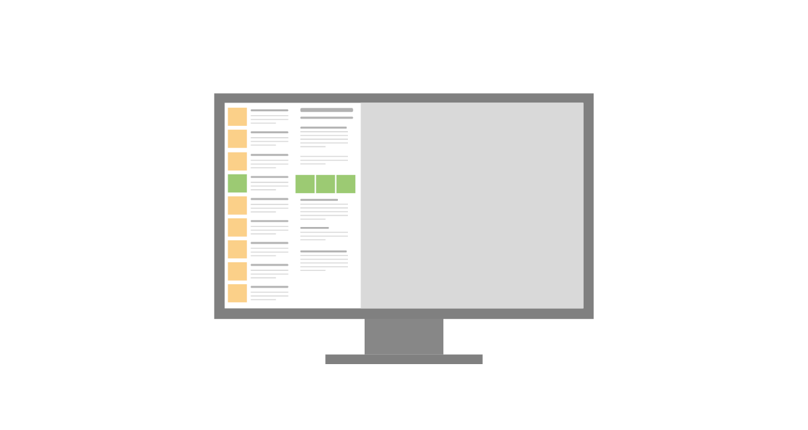
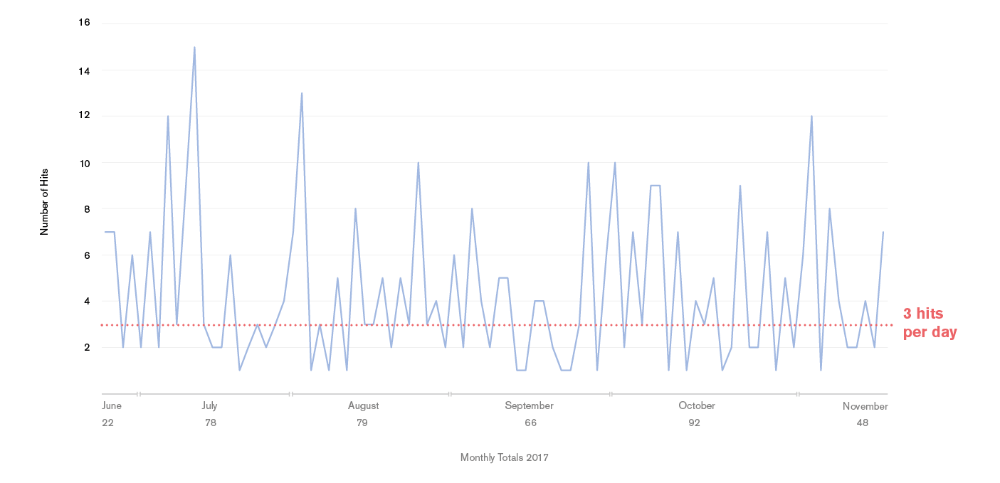
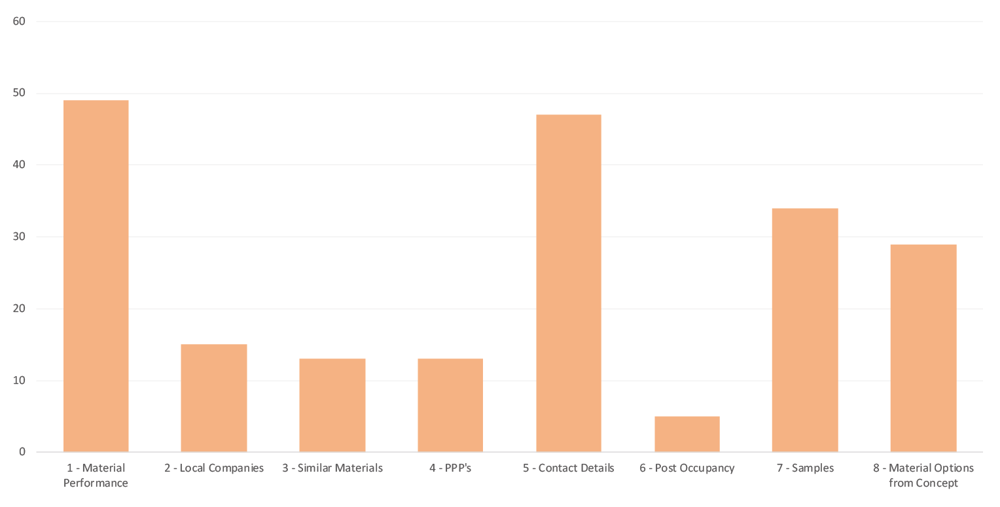
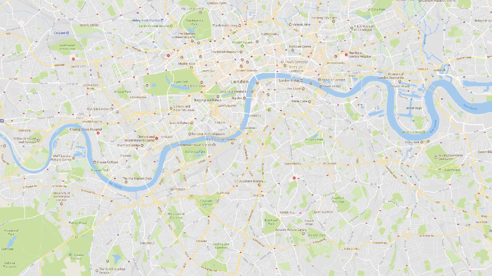
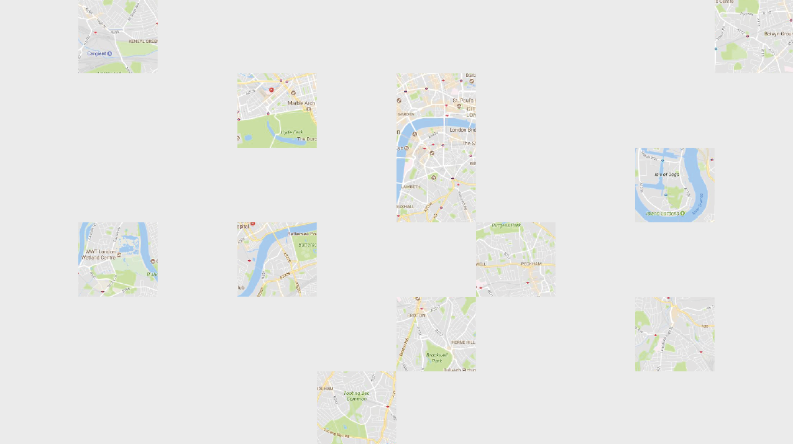
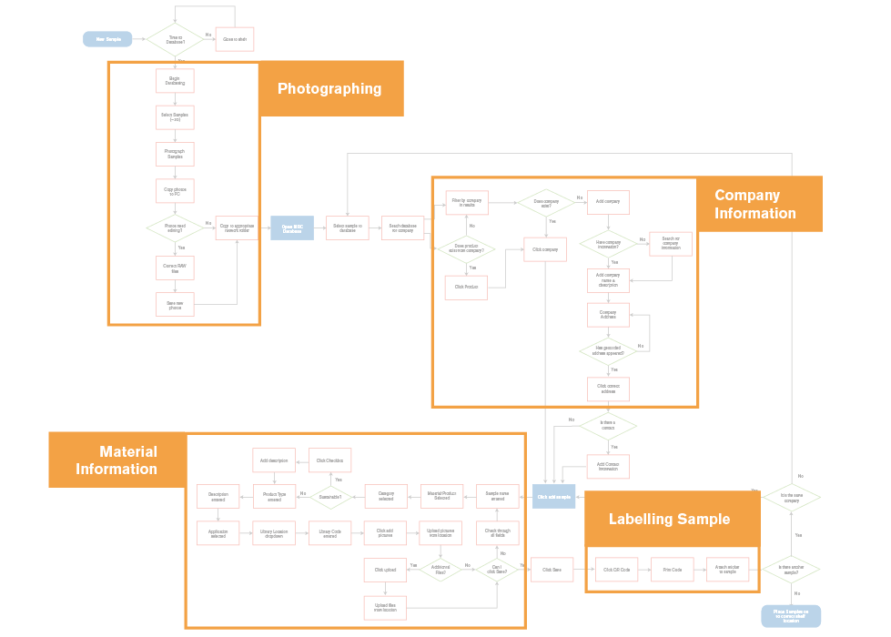
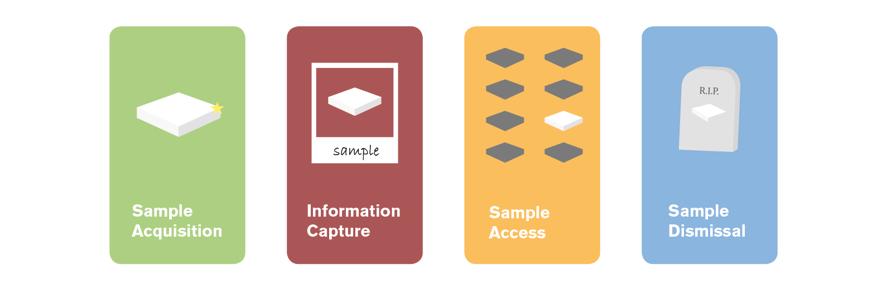

Materials Database
Some information has been omitted from this case study due to confidentiality. The views and information shown are based of my own opinions and findings, which are not necessarily representative of Foster+Partners
Introduction
The Material Research Centre (MRC) had been developing a database in order to hold a record of all the material samples available in the library, and make it accessible practice wide.
When this database went live, usership was quite low, and so I was tasked with redesiging a system that worked better.
My Role: Researcher and Designer
The Problem
The original design brief of the database had not been clearly laid out previously, and as such over time began to morph and grow: users would request features, and the programmer would write them in, without any guidance or intervention from a designer. This led to a system that attempted to do too much, but also failed to function at it's core goal of aiding the team in managing the library, and allowing other members of the practice to effectively search for materials.

From user feedback and review, some of the issues included:
●Location focused interface, with a map taking up over 70% of a screen
●Small images of materials
●Problematic search, due to data structure behind the front end
●Unnecessary information, and poor information hierarchy, resulting in a "busy" page
These issues became clear in usership, which had just under 3 hits per working day on average:

Research
With a number of issues with the application, I chose to go right to the start and actually clearly define the tool:
Who is it for, and why is it needed?
The Intention
When speaking about the database to the MRC team, it became clear that the main desire of the tool was to allow architects to access a digital library of material information,
in order to alleviate the work load on the team, and have greater exposure to offices around the world. However when asked specifically about the type of work it should assist with,
the answers became subjective and qualatitive. People's belief about the divide of work they do, was quite different to the reality.
I ran a workshop, where we created user profiles for members of the office that would ask the team questions, then allowing us to have clear categories of work that was done:

From these 8 categories, I created a work tracking system, so that the team would log the type of queries they would recieve (amongst other information) so that we could clearly see
a spread of what they were being asked:

Which could then be cross-referenced with the functionality of the existing tool, to see how much it was actually helping, and how much it could help.
The Data
One of the main comments from external users was they "could not find what (they) were looking for". Whilst this was typically attributed to the technological limitations of the database,
the team was overlooking a crucial fact: that only a small % of the samples in the library were captured digitally.
This would have huge impacts on usership, after all, no one would use a maps service if only a fraction of the map data was there:


With an incomplete dataset, it became irrelevant as to how well you present or access the information, the focus of the tool should be on effectively capturing the information in the library.
This was made even more important when discussed with the team, as it was the primary method of managing the library, but with the blurred brief, had become inundated with information that
not only slowed down the process of documenting samples, but in a lot of cases weren't even used by employees outside of the team.
A user flow was documented for the process of actually databasing a sample:

When actually written down, it was clear that a 50+ step process to document a sample was far too long, especially with a library in excess of 20,000 materials. It also brought up the issue of
overall process management, how are the samples handled throughout their life at the company, when they're received by the team, if an employee needs to borrow them etc. These processes and stages were
also identified, and required the flows for the samples management:

Design
With bigger questions being asked about the process, exercises were undertaken to see how the journey of a sample could be improved. However there were still issues with the front end, and these too had to be addressed.